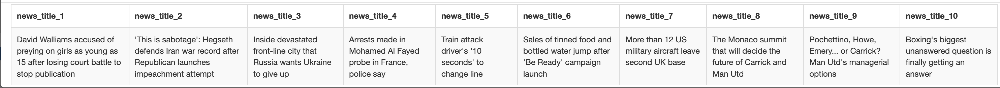

Week 2 · Web Scraping
What I did in the workshop
This week, I learned how to collect data from a web page using the Web Scraper extension in Chrome. I used the BBC homepage for my practice and focused on the headlines.
I set the BBC homepage as the starting page, selected the
headline text and checked the results in Data Preview.
The preview showed ten headlines in separate columns,
labelled news_title_1 to
news_title_10.

What I learned from this class
I had fun trying Web Scraper on the BBC homepage. I liked being able to decide what went into my table. I only wanted the headlines, so I selected those and left the rest of the page alone. It felt a bit like magic when all ten headlines showed up in the preview at once. It was so much quicker than copying them one by one.
n Week 1, I used HTML to put my own page together. This time, I used the structure of a page to pick out bits of it. Looking back at my table, I realised I could see what the headlines said, but I couldn't tell which story was right at the top of the homepage or which one had the biggest photo. If I wanted to find out which stories the BBC gave the most space to, I'd need to collect those details too.